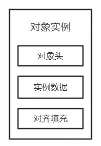
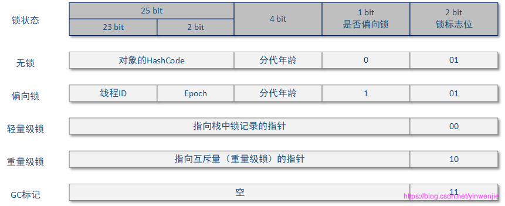
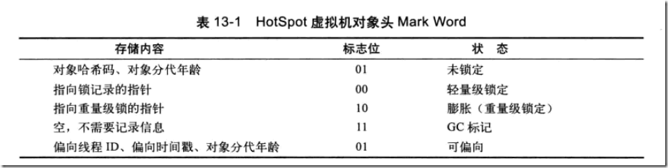
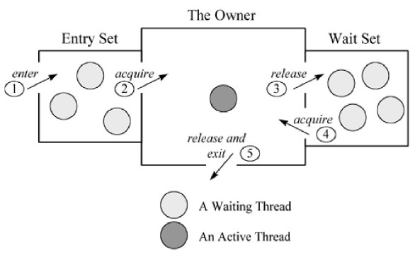
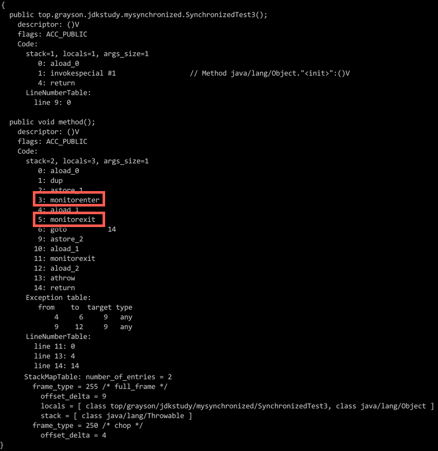
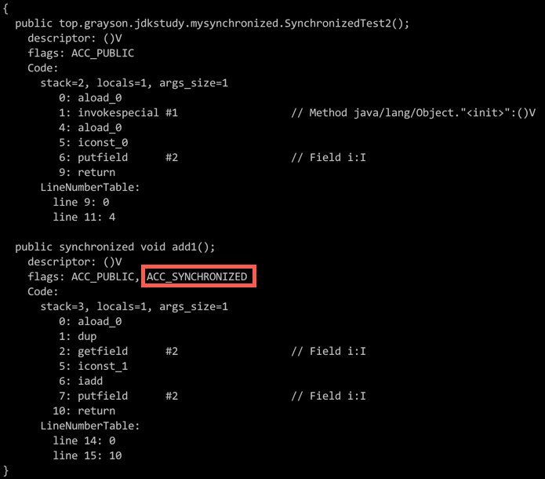

Synchronized实现原理 #
1 特性 #
Synchronized 具有 原子性、 可见性、 有序性、 可重入性。
2 用法 #
Synchronized 可以修饰静态方法、成员函数，同时还可以直接定义代码块，但是归根结底他上锁的资源只有两类，一个是对象，一个是类。
关于
static需要注意以下地方：
static修饰的静态方法、静态属性都是归类所有，同时该类的所有实例对象都可以访问。- 普通成员属性、成员方法是归实例化的对象所有，必须实例化之后才能访问，这也是为什么静态方法不能访问非静态属性的原因。
2.1 修饰成员函数 #
下面的代码均定义在
SynchronizedTest类中，且该类中的变量定义如下：private int i = 0; private static int j = 0; private final SynchronizedTest instance = new SynchronizedTest();
-
具体的代码如下：
// 对成员函数加锁，必须获得该类的实例对象的锁才能进入同步块 public synchronized void add1() { i++; } -
该方法没有被
static修饰，也就是说该方法是归实例化的对象所有，那么这个锁就是加给SynchronizedTest类所实例化的对象。
2.2 修饰静态方法 #
-
具体的代码如下：
// 对静态方法加锁，必须获得类的锁才能进入同步块 public static synchronized void add2() { j++; } -
该方法是静态方法，归
SynchronizedTest类所有，所以这个锁是加给SynchronizedTest类的。
2.3 修饰代码块 #
-
具体的代码如下：
public void method() { synchronized (SynchronizedTest.class) { // 同步块，执行前必须获得 SynchronizedTest 类的锁 } synchronized (instance) { // 同步块，执行前必须先获得实例对象的锁 } } -
method方法中的两个同步代码块，第一个代码块锁定的是SynchronizedTest.class，该锁是加给SynchronizedTest类的，第二个代码块锁定的是instance，这个instance是SynchronizedTest类的一个实例化对象，因此他所上的锁是给insatnce实例化对象的。
3 相关概念 #
3.1 Java 对象头 #
- 在 JVM 中，对象在内存中的布局分为三块区域，分别是对象头、实例数据和对齐填充，如下图所示：

- 实例数据：
- 存放类的属性数据信息，包括父类的属性信息。
- 对齐填充：
- 由于虚拟机要求，对象起始地址必须是 8 字节的整数倍，填充数据不是必须存在的，仅仅是为了字节对齐。
- 对象头：
- Java 对象头一般占用 2 个机器码（在 32 位虚拟机中，1 个机器码等于 4 字节，也就是 32bit，在 64 位虚拟机中，1 个机器码是 8 个字节，也就是 64bit），但是如果对象是数组类型，则需要三个机器码，因为需要一块来记录数组长度。
- Hotspot 虚拟机的对象头主要包括两部分数据，分别是Mark Word（标记字段）、Class Pointer（类型指针）：
-
Mark Word：
-
Mark Word 主要用于存储对象自身的运行时数据，如哈希码（HashCode）、GC 分代年龄、锁状态标志、线程持有的锁、偏向线程 ID、偏向时间戳等，是实现轻量级锁和偏向锁的关键。
-
对象头信息是与对象自身定义的数据无关的额外存储成本，但是考虑到虚拟机的空间效率，Mark Word被设计成一个非固定的数据结构，以便在极小的空间内存储尽量多的数据，他会根据对象的状态复用自己的存储空间，也就是说，Mark Word会随着程序的运行发生变化，可能变化为存储以下四种数据（32 位虚拟机）： 
-
对象头的最后两位存储了锁的标志位，01 是初始状态，未加锁，其对象头里存储的是对象本身的哈希码，随着锁级别的不同，对象头里会存储不同的内容：
- 偏向锁存储的是当前占用此对象的线程 ID。
- 轻量级锁存储的是指向线程栈中锁记录的指针。
-
从这里我们可以看到：
- 锁可能是个锁记录 + 对象头里的引用指针（判断线程是否拥有锁时将线程的锁记录地址和对象头里的指针地址比较）。
- 锁也可能是对象里头的线程 ID（判断线程是否拥有锁时将线程的 ID 和对象里存储的线程 ID 比较）。

-
锁也分为不同的状态，JDK 1.6 之前只有两个状态，分别是无锁、有锁（重量级锁），在 JDK 1.6 之后，对 Synchronized 进行了优化，新增了两种状态，总共就是四个状态，分别是无锁、偏向锁、轻量级锁、重量级锁，锁的类型和状态在对象头 Mark Word 中都有记录，在申请锁、锁升级等过程中 JVM 都需要读取对象的 Mark Word 数据。
-
-
Class Pointer：
- Class Pointer是对象指向他的类元数据的指针，虚拟机通过这个指针来确定这个对象是哪个类的实例。
-
- 实例数据：
3.2 对象头中的 Mark Word 与线程中的 Lock Record #
- 在线程进入同步代码块的时候，如果此同步对象没有被锁定，即他的所标志位是 01，则虚拟机首先在当前线程的栈中创建我们称之为锁记录（Lock Record）的空间，用于存储锁对象的 Mark Word 拷贝。
- Lock Record 是线程私有的数据结构，每一个线程都有一个可用 Lock Record 列表，同时还有一个全局列表，每一个被锁住的对象 Mark Word 都会和一个 Lock Record 关联（对象头的 Mark Word 中的 Lock Word 指向 Lock Record 的起始地址），同时 Lock Record 中有一个
Owner字段存放拥有该锁的唯一标识，表示该锁被这个线程占用。 - Lock Record 主要包括以下字段：
- Owner：初始时为
null，表示当前没有任何线程拥有该 Lock Record，当线程成功拥有该锁后保存线程唯一标识，当锁被释放时又设置为null。 - EntryQ：关联一个系统互斥锁（
Semaphore），阻塞所有试图锁住该 Lock Record 失败的线程。 - RcThis：表示
blocked或waiting在该 Lock Record 上的所有线程的个数。 - Nest：用来实现重入锁的计数。
- HashCode：保存从对象头拷贝过来的 HashCode 值。
- Candidate：用来避免不必要的阻塞或等待线程唤醒，因为每一次只有一个线程能够成功拥有锁，如果每次前一个释放锁的线程唤醒所有正在阻塞或等待的线程，会引起不必要的上下文切换（从阻塞到就绪，然后因为竞争锁失败又被阻塞），从而导致性能严重下降，Candidate只有两种可能的值，0 表示没有需要唤醒的线程，1 表示要唤醒一个继任线程来竞争锁。
- Owner：初始时为
3.3 Monitor #
-
Monitor是一个同步工具，每个对象都有一个 Monitor 与之关联，当一个 Monitor 被持有后，他将处于锁定状态。
-
Synchronized 在 JVM 里的实现都是基于进入和退出 Monitor 对象来实现方法同步和代码块同步，虽然具体实现细节不一样，但是都可以通过成对的 MonitorEnter 和 MonitorExit 指令来实现：
- MonitorEnter：插入在同步代码块的开始位置，当代码执行到该指令时，将会尝试获取该对象 Monitor 的所有权，即尝试获得该对象的锁。
- MonitorExit：插入在方法结束处和异常处，JVM 保证每个 MonitorEnter 必须有对应的 MonitorExit。
-
在 Java 虚拟机（HotSpot）中，Monitor 是由 ObjectMonitor（
src/share/vm/runtime/objectMonitor.hpp）实现，其主要数据结构如下：ObjectMonitor() { _header = NULL; _count = 0; // 记录个数 _waiters = 0, _recursions = 0; _object = NULL; _owner = NULL; _WaitSet = NULL; // 处于 wait 状态的线程，会被加入到 _WaitSet _WaitSetLock = 0 ; _Responsible = NULL ; _succ = NULL ; _cxq = NULL ; FreeNext = NULL ; _EntryList = NULL ; // 处于等待锁 block 状态的线程，会被加入到 _EntryList _SpinFreq = 0 ; _SpinClock = 0 ; OwnerIsThread = 0 ; _previous_owner_tid = 0; }- ObjectMonitor 中有两个队列，分别是
_WaitSet和_EntryList，用来保存 ObjectWaiter 对象列表（每个等待锁的线程都会被封装成 ObjectWaiter 对象），_owner指向持有 ObjectMonitor 的线程，当多个线程同时访问同一段代码时：-
首先会进入
_EntryList列表，当线程获取到对象的 Monitor 后，进入_owner区域并把_owner变量设置为当前线程，同时Monitor 中的计数器_count加 1。 -
若线程调用
wait()方法，将释放当前持有的 Monitor，_owner变量恢复为null，_count减 1，同时该线程进入_WaitSet集合中等待被唤醒。 -
若当前线程执行完毕，也将释放当前持有的 Monitor，并复位
_count的值，以便其他线程进入获取 Monitor。因为
wait()、notify()需要借助 Monitor 对象来实现，所以必须要在同步方法或同步代码块中使用。
-
- 一个更形象的描述如下：

- 一个线程通过 1 号门进入 Entry Set（入口区）：
- 如果入口区没有线程等待，那么这个线程就会获取监视器成为监视器的
Owner，然后执行监视区域的代码。 - 如果在入口区中有其他线程等待，那么新来的线程也会和这些线程一起等待。
- 如果入口区没有线程等待，那么这个线程就会获取监视器成为监视器的
- 线程在持有监视器的过程中有两个选择：
-
一个是正常执行监视区域的代码，释放监视器，通过 5 号门退出监视器。
-
还有可能等待某个条件的出现，于是他会通过 3 号门到 Wait Set（等待区）休息，直到相应的条件满足后再通过 4 号门进入，重新获得监视器再执行。
需要注意的是：
- 当一个线程释放监视器时，在入口区和等待区的等待线程都会去竞争监视器：
- 如果入口区的线程赢了，会从 2 号门进入。
- 如果等待区的线程赢了，会从 4 号门进入。
- 只有通过 3 号门才能进入等待区，在等待区中的线程只有通过 4 号门才能退出等待区，也就是说，一个线程只有在持有监视器时才能执行
wait操作，处于等待的线程只有再次获得监视器才能退出等待状态。
- 当一个线程释放监视器时，在入口区和等待区的等待线程都会去竞争监视器：
-
- 一个线程通过 1 号门进入 Entry Set（入口区）：
- ObjectMonitor 中有两个队列，分别是
4 实现原理 #
- Java 虚拟机是通过进入和退出 Monitor 对象来实现代码块同步和方法同步的：
- 代码块同步使用的是
monitorenter和monitorexit指令实现的。 - 方法同步是通过
Access flags后面的ACC_SYNCHRONIZED标志来隐式实现的。
- 代码块同步使用的是
- 这两种同步方式在本质上没有区别，只是方法的同步是一种隐式的方式来实现的，无需通过字节码来完成，两个指令的执行是 JVM 通过调用操作系统的互斥原语
mutex来实现，被阻塞的线程会被挂起，等待重新调度，会导致用户态和和心态两个态之间来回切换，对性能有较大影响。
4.1 同步代码块 #
- 当一个线程访问同步代码块时，首先是需要得到锁才能执行同步代码，当退出或者抛出异常时必须要释放锁，具体的实现如下：
-
首先，我们定义一个同步代码块：
public class SynchronizedTest3 { public void method() { synchronized (this) { // 同步块，执行前必须获得 SynchronizedTest 类的锁 } } } -
然后对该方法进行反编译（
javac SynchronizedTest3.java），接着查看对应的字节码（javap -v -c -s -l SynchronizedTest3）：
-
从上述字节码中可以看到同步代码块的实现是由
monitorenter和monitorexit指令完成的：monitorenter：- 每个对象都是一个监视器锁，当 Monitor被占用时就会处于锁定状态，线程执行
monitorenter指令时尝试获取monitor的所有权，过程如下：- 如果
monitor的进入数为 0，则该线程进入monitor，然后将进入数设置为 1，该线程即为monitor的所有者。 - 如果该线程已经占有该
monitor，只是重新进入，则进入monitor的进入数加 1。 - 如果其他线程已经占用了
monitor，则该线程进入阻塞状态，直到**monitor的进入数为 0**，再**重新尝试获取monitor的所有权**。
- 如果
- 每个对象都是一个监视器锁，当 Monitor被占用时就会处于锁定状态，线程执行
monitorexit：- 执行
monitorexit的线程必须是对应的monitor的持有者。 - 指令执行时，
monitor的进入数减 1，如果减 1 后进入数为 0，则线程退出monitor，不再是这个monitor的持有者，其他被这个monitor阻塞的线程可以尝试去获取这个monitor的所有权。 monitorexit指令出现了两次，第一次为同步正常退出释放锁，第二次为发生异常退出释放锁。
- 执行
-
4.2 同步方法 #
-
首先看方法上锁，我们新定义一个同步方法：
public class SynchronizedTest2 { private int i = 0; public synchronized void add1() { i++; } } -
对该方法进行反编译（
javac java_file），然后查看其字节码（javap -v -c -s -l class_file）：
-
从反编译的结果来看，方法的同步并没有通过指令
monitorenter和monitorexit来完成，不过相对于普通方法，其常量池中多了ACC_SYNCHRONIZED标识符，JVM 就是根据该标识符来实现方法的同步的：- 当方法调用时，调用指令将会检查方法的
ACC_SYNCHRONIZED访问标志是否被设置，如果设置了，执行线程将先获取monitor，获取成功之后才能执行方法体，方法执行完后再释放monitor，在方法执行期间，其他任何线程都无法再获得同一个monitor对象。
- 当方法调用时，调用指令将会检查方法的
5 JVM 对 Synchronized 的优化 #
5.1 为什么要进行优化 #
- JVM 是通过进入和退出 Monitor 对象来实现代码块同步和方法同步的，而Monitor 是依靠底层操作系统的 Mutex Lock 来实现的，操作系统实现线程之间的切换需要 从用户态转换到核心态，这个切换成本比较高，对性能影响较大。
5.2 做了哪些优化 #
- 从JDK 1.5 引入了现代操作系统新增加的** CAS原子操作**。
- 从JDK 1.6开始，就对 Synchronized 的实现机制进行了较大调整，增加了自适应自旋锁、锁消除、锁粗化、偏向锁、轻量级锁这些优化策略，以此来减少锁的开销。
- 此时锁主要有四种状态，依次是无锁状态、偏向锁状态、轻量级锁状态、重量级锁状态，锁可以从偏向锁升级到轻量级锁，再升级到重量级锁，但是锁的升级是单向的，只能从低到高升级，不会出现锁的降级。
5.2.1 自旋锁 #
自旋锁的相关内容详见 5.1.1 自旋锁。
5.2.2 适应性自旋锁 #
适应性自旋锁的相关内容详见 5.1.2 适应性自旋锁。
5.2.3 锁消除 #
-
锁消除是 Java 虚拟机在 JIT 编译期间，通过对运行上下文的扫描，去除不可能存在共享资源竞争的锁，通过锁消除，可以减少毫无意义的请求锁的时间。
-
比如下面代码的
method1和method2的执行效率是一样的，因为object锁是私有变量，不存在锁竞争关系：public class SynchronizedTest4 { public void method1() { Object object = new Object(); synchronized (object) { // 执行同步代码 System.out.println("Hello World."); } } // 优化后的方法，和上面 method1 的执行效率一样 public void method2() { Object object = new Object(); System.out.println("Hello World."); } }
5.2.4 锁粗化 #
-
锁粗化是指将多个连续的加锁、解锁操作连接在一起，扩展成一个范围更大的锁。
-
比如下面的
method3经过锁粗化优化之后就和method4执行效率一样了：public void method3() { for (int i = 0; i < 10000; i++) { synchronized (this) { System.out.println("Hello World."); } } } // 锁粗化，和上面一样 public void method5() { synchronized (this) { for (int i = 0; i < 10000; i++) { System.out.println("Hello World."); } } }
5.2.5 偏向锁 #
偏向锁的相关内容详见 6.2.2 偏向锁。
5.2.6 轻量级锁 #
轻量级锁的相关内容详见 6.2.3 轻量级锁。
5.2.7 重量级锁 #
重量级锁的相关内容详见 6.2.4 重量级锁。
6 Synchronized 与 Lock 的区别 #
- 实现层面不一样：
- Synchronized 是Java 关键字，在JVM 层面实现加锁和释放锁。
- Lock 是一个接口，在代码层面实现加锁和释放锁。
- 是否自动释放锁：
- Synchronized在线程代码执行完成或出现异常时自动释放锁。
- Lock不会自动释放锁，需要在
finally{}代码块中显式地释放锁。
- 是否一致等待：
- Synchronized 会导致线程拿不到锁一直等待。
- Lock可以设置尝试获取锁或者获取锁失败一定时间超时。
- 获取锁成功是否可知：
- Synchronized无法得知是否获取锁成功。
- Lock可以通过
tryLock获得加锁是否成功。
- 功能复杂性：